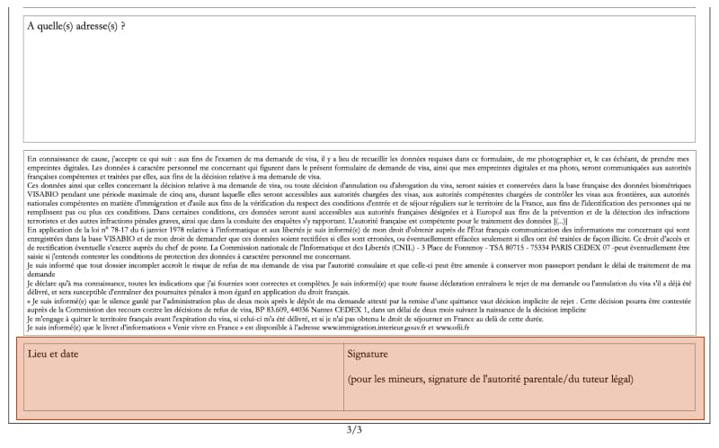
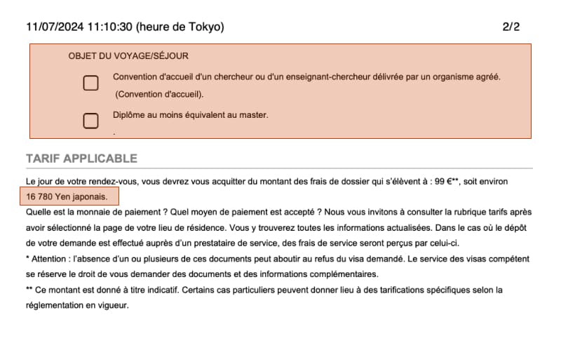
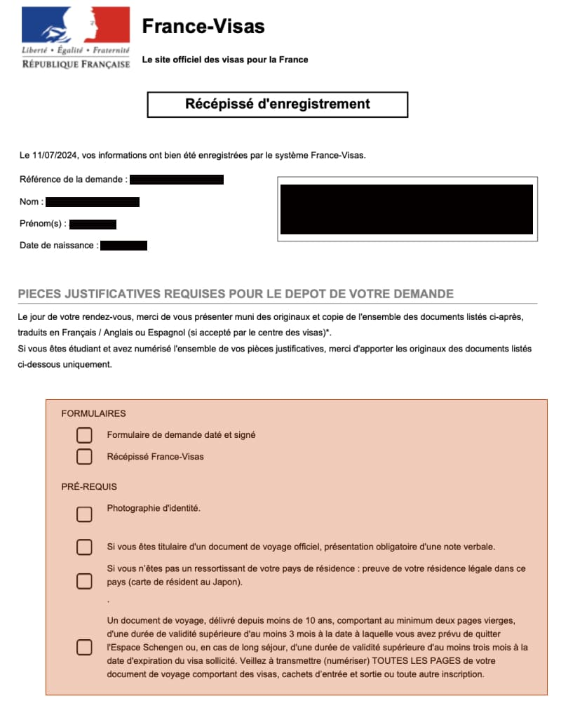
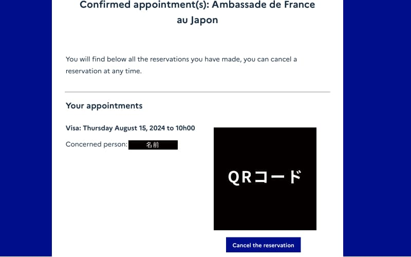
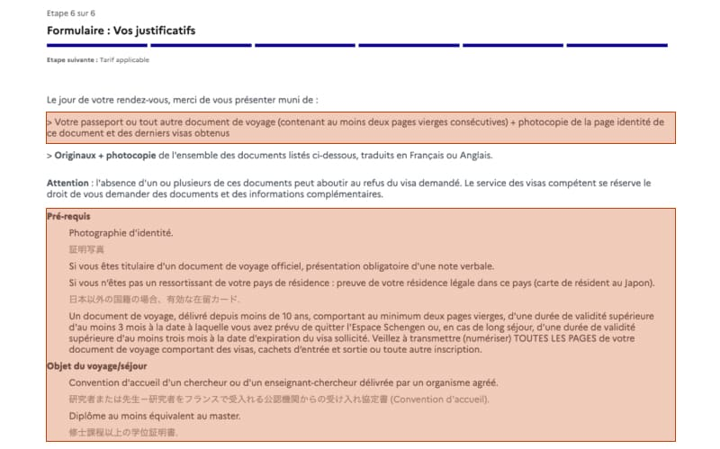
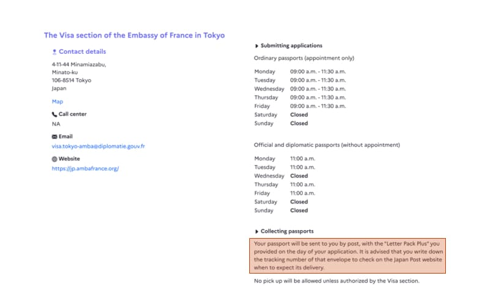

フランスでPhDに進む場合に必要な、研究者ビザ申請時に必要な書類について紹介します。 研究者ビザ申請の全体的な流れが知りたい場合は：

目次
必要書類一覧
研究者ビザ(Passeport talent - Chercheur)の申請時に必要な書類は下記です：
- パスポート …(A)
- パスポートのコピー（顔写真があるページ）…(B)
- 申請書（印刷し、証明写真を貼って、サインをする）…(C)
- 証明写真（申請書に貼る）…(D)
- 修士の修了証明書（英語）…(E)
- Convention d’accueil…(F)
- ビザ申請料 …(G)※2024/7時点では16,780円 ※お釣りが出ないように！
- 申請書チェックリスト（ダウンロードした申請書の最終ページにある）…(H)
- 大使館予約確認書 …(I)
- レターパック（赤）…(J)
(A)パスポート, (B)パスポートのコピー
パスポートは博士の契約期間まで残存期間があることを確認してください。パスポートのコピーは、顔写真と名前などの情報が掲載されているページの見開きだけで大丈夫でした。（念の為全部コピーしましたが、不要でした。）
(C)申請書
france-visas.gouv.frのApplication Formで作成が完了すると、PDFが出力されますので、ダウンロードして印刷します。PDFの構成は以下になっているかと思います：
- 申請書（３ページ）
- 謎の空白ページ（1ページ）
- 書類のチェックリスト（2ページ）
印刷後、申請書1ページ目の証明写真貼り付け箇所に、証明写真を貼り付けます。また、申請書の3ページ目最後にサインをします（下記画像赤マーカ部分）。Lieu et dateには”Tokyo, 日付”を記載し、 Signatureには、パスポート記載のサインと同じサインをします。 </a>
(D)証明写真
- 証明写真のサイズ：パスポート同じ（35 x 45）
- 証明写真撮影時の注意点：Schengen visa photograph instructionsをご覧ください。
そして…証明写真は、申請書に貼ることを忘れないでください！
(E)修士の修了証明書（英語）
ご自身の出身校にて、英語の修了証明書を発行してもらってください。
(F)Convention d’accueil…
Convention d’accuei（研究機関または大学による受け入れ協定書）の入手方法：
ちなみに、Convention d’accueilはビザ申請手続き完了後、郵送にてビザつきパスポートともに返却されます。
(G)ビザ申請費用（16,780円 ※2024年）
ビザ申請費用は99ユーロなのですが、円払いです。為替によって変わりますので、実際の金額はご自身のビザ申請書類の最後のページを確認して下さい（下記画像下部参照）。 </a>
円安の影響を受け、2024年7月に申請した私は16,780円でした（涙）2020年に申請したT.Hさんは12,453円だったようです…（参考：【フランス生活】研究者ビザ取得から現地役所手続きの全て(2020年)）
(H)申請書類チェックリスト
申請書で記載した内容と同じですが、france-visas.gouv.frのApplication Formで申請書の作成が終わるとPDFが出力されます。そのPDFの最後2ページが申請書類チェックリストになっています。(下記画像参照)

(I)大使館の予約確認書
Appointment booking service with the French consular services （ Ambassade de France au Japon）で大使館の予約を済ませると、予約確認書がメールで送られてきます（下記画像参照）。こちらを印刷して、大使館に持参する必要があります。 
フランス大使館予約の方法が知りたい方はフランス大使館予約システムの使い方をご覧ください。
必要書類はどこに記載されているのか。
下記3ページを確認すれば、必要な書類が全て掲載されています：
- 申請書を書き終えた後の画面
- 完成した申請書（PDF）の最終ページ
- france-visas.gouv.frの在日本フランス大使館のページ
全部まとめて記載してくれておらず、さまざまなページに散らばっているのが不親切ですよね…
申請書を書き終えた後の画面
- 下記画像の赤マーカー（上部）：(A)パスポート, (B)パスポートのコピーが必要であることが記載されています。
- 下記画像の赤マーカー（下部）：(D)証明写真, (A)パスポート, (E)修士の修了証明書（英語）, (F) Convention d’accueilが必要であることが記載されています。
</a>
完成した申請書（PDF）の最終ページ
赤マーカー部分のチェックリスト上から：
- (C) 印刷し、サイン（場所・日付・名前）をした申請書
- (I) フランス大使館予約確認書
- (D) 証明写真
- 公用旅券である場合は口頭で伝えること ※ほとんどの人が当てはまらないと思うので、無視で大丈夫です。
- 日本国籍でない場合、日本の在留カード
- (A) パスポート
赤マーカー部分のチェックリスト上から：
- (F) Convention d’accueil
- (E)修士の修了証明書（英語）
- (G) 16,780円
france-visas.gouv.frの在日本フランス大使館のページ
レターパックは非常にわかりにくいのですが、ビザ申請サイトの在日本フランス大使館のページに小さく記載があります： 
最後に
ざっと書いたので分かりにくいかもしれません。忘れないうちに残しておきたかったので、ゆっくり見直していきます… 間違っているところ・質問があれば、遠慮なくこちらから教えてください。
関連記事